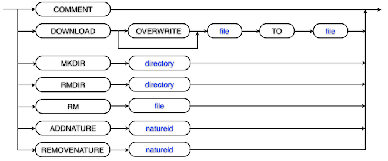

The Remote Project Configuration Plug-in provides functionality to configure projects within the workspace using a a very simple, shell script like command file. This so called Eclipse Project Configuration Script (EPCS) file is either fetched using a HTTP transfer or from a local file.
The project configuration process consists of two to three logical steps:
Provided at least one valid URL to a EPCS file is configured, the following steps initiate a project configuration:
Eclipse Project Configuration Script (EPCS) files are plain text files that are organized in lines. A line may contain either a comment, nothing at all or exactly one command. The basic syntax can be seen in the following diagram and each command it is described in detail below:
| Command | Description |
|---|---|
# |
Lines starting with the character '#' are treated as comment. |
mkdir DIRECTORY |
Creates the DIRECTORY if it does not already exist. The path to the DIRECTORY is relative to the project root. |
rm FILE |
Deletes the FILE if it exists. The path to the FILE is relative to the project root. Directories must be deleted with the rmdir command. |
rmdir DIRECTORY |
Deletes the empty DIRECTORY if it exists. The path to the DIRECTORY is relative to the project root. |
download [overwrite] SOURCE to FILE |
Downloads the SOURCE to the FILE if the FILE does not already exist. The SOURCE must be a valid URL and FILE a filename relative to the project root. To replace a possibly existing FILE, use the optional overwrite parameter. |
addnature NATUREID |
Adds the nature defined by NATUREID to the projects. |
removeature NATUREID |
Removes the nature defined by NATUREID to the projects. |
The following example EPCS file shows some cases used to test the plug-in:
# sample project configuration command (epcs) file # mkdir on not existing directory mkdir testdir # mkdir on existing directory mkdir existingdir # download file not existing in target download http://www.foo.com/test/test.file to testdir/test.file # download file existing in target (don't overwrite) download http://www.foo.com/test/test.file to test.file # download file existing in target (overwrite) download overwrite http://www.foo.com/test/test.file to test.file # delete file rm testdir/test.file # delete not existing file rm testdir/bla.file # delete directory rmdir testdir
The behavior of the Remote Project Preference plug-in can be configured in the Eclipse preferences dialog. Open the dialog from the Window > Preferences menu. The settings are located on the General > Remote Project Properties page.
List of project configuration script URLs: Add, remove or edit the URLs of the EPCS files to the list using the buttons to the right. The editing itself is done in a separate dialog that will pop up. The protocolls supported are http(s):// and file://. The URLs need to comply with the following rules:
'http', 'https' or 'file''#'
There are no built-in default settings, but you may provide them by editing the property file $ECLIPSE_HOME/plugins/ch.netcetera.eclipse.projectconfig.ui.fragment_$VERSION_↵ /ch.netcetera.eclipse.projectconfig.ui.fragment/default.properties.
Command File URL Configure a default using the property key project.config.url. Multiple URLs are separated by the character #. The character # itself is therefore unsupported within URLs.